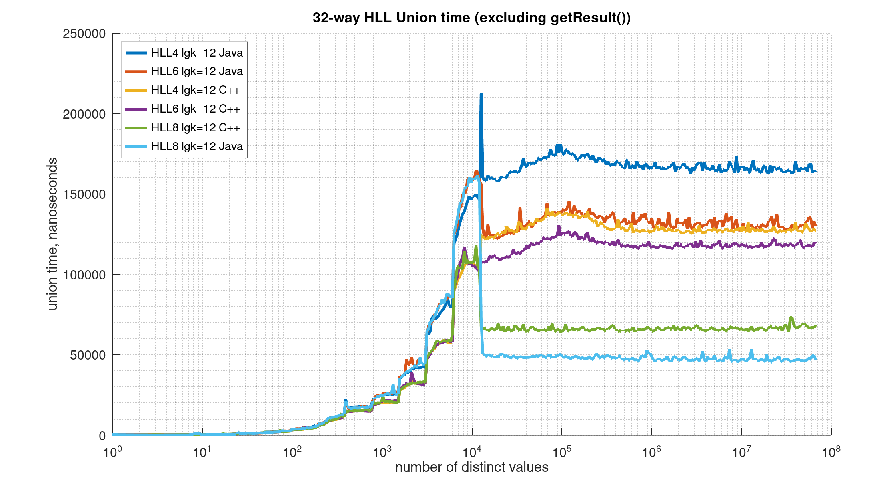

Class HllUnion
- All Implemented Interfaces:
MemorySegmentStatus
update(HllSketch) can
be configured with any precision value lgConfigK (from 4 to 21), any TgtHllType
(HLL_4, HLL_6, HLL_8), and either on or off-heap; and it can be in either of the sparse modes
(LIST or SET), or the dense mode (HLL).
Although the API for this HllUnion operator parallels many of the methods of the HllSketch, the behavior of the HllUnion operator has some fundamental differences.
First, this HllUnion operator is configured with a lgMaxK instead of the normal lgConfigK. Generally, this HllUnion operator will inherit the lowest lgConfigK less than lgMaxK that it has seen. However, the lgConfigK of incoming sketches that are still in sparse are ignored. The lgMaxK provides the user the ability to specify the largest maximum size for the HllUnion operation.
Second, the user cannot specify the TgtHllType as an input parameter to the HllUnion.
Instead, it is specified for the sketch returned with getResult(TgtHllType).
The following graph illustrates the HLL Merge speed.

This graph illustrates the relative merging speed of the HLL 4,6,8 Java HLL sketches compared to the DataSketches C++ implementations of the same sketches. With this particular test (merging 32 relative large sketches together), the Java HLL 8 is the fastest and the Java HLL 4 the slowest, with a mixed cluster in the middle. HllUnion / Merging speed is somewhat difficult to measure as the performance is very dependent on the mix of sketch sizes (and types) you are merging. So your mileage will vary!For a complete example of using the HllUnion operator see HllUnion Example.
- Author:
- Lee Rhodes, Kevin Lang
-
Constructor Summary
ConstructorsConstructorDescriptionHllUnion()Construct this HllUnion operator with the default maximum log-base-2 of K.HllUnion(int lgMaxK) Construct this HllUnion operator with a given maximum log-base-2 of K.HllUnion(int lgMaxK, MemorySegment dstWseg) Construct this HllUnion operator with a given maximum log-base-2 of K and the given MemorySegment as the destination for this HllUnion. -
Method Summary
Modifier and TypeMethodDescriptionintGets the size in bytes of the current sketch when serialized using toCompactByteArray().doubleThis is less accurate than the getEstimate() method and is automatically used when the sketch has gone through union operations where the more accurate HIP estimator cannot be used.doubleReturn the cardinality estimateintGets the effective lgConfigK for the HllUnion operator, which may be less than lgMaxK.doublegetLowerBound(int numStdDev) Gets the approximate lower error bound given the specified number of Standard Deviations.static intgetMaxSerializationBytes(int lgK) Returns the maximum size in bytes that this HllUnion operator can grow to given a lgK.static doublegetRelErr(boolean upperBound, boolean oooFlag, int lgConfigK, int numStdDev) Gets the current (approximate) Relative Error (RE) asymptotic values given several parameters.Return the result of this HllUnion operator as an HLL_4 sketch.getResult(TgtHllType tgtHllType) Return the result of this HllUnion operator with the specifiedTgtHllTypestatic final intReturns the current serialization version.static final intReturns the current serialization version of the given MemorySegment.Gets theTgtHllTypeintGets the size in bytes of the current sketch when serialized using toUpdatableByteArray().doublegetUpperBound(int numStdDev) Gets the approximate upper error bound given the specified number of Standard Deviations.booleanReturns true if this sketch was created using MemorySegment.static final HllUnionheapify(byte[] byteArray) Construct a HllUnion operator populated with the given byte array image of an HllSketch.static final HllUnionheapify(MemorySegment seg) Construct a HllUnion operator populated with the given MemorySegment image of an HllSketch.booleanReturns true if the backing MemorySegment of this sketch is in compact form.booleanisEmpty()Returns true if emptybooleanThis HLL family of sketches and operators is always estimating, even for very small values.booleanReturns true if the backing MemorySegment for this sketch is off-heap.booleanReturns true if the given MemorySegment refers to the same underlying resource as this sketch.voidreset()Resets to empty and retains the current lgK, but does not change the configured value of lgMaxK.byte[]Gets the serialization of this HllUnion operator as a byte array in compact form, which is designed to be heapified only.toString()Human readable summary as a string.toString(boolean summary, boolean detail, boolean auxDetail) Human readable summary with optional detail.toString(boolean summary, boolean hllDetail, boolean auxDetail, boolean all) Human readable summary with optional detailbyte[]Serializes this sketch as a byte array in an updatable form.voidupdate(byte[] data) Present the given byte array as a potential unique item.voidupdate(char[] data) Present the given char array as a potential unique item.voidupdate(double datum) Present the given double (or float) datum as a potential unique item.voidupdate(int[] data) Present the given integer array as a potential unique item.voidupdate(long datum) Present the given long as a potential unique item.voidupdate(long[] data) Present the given long array as a potential unique item.voidPresent the given String as a potential unique item.voidupdate(ByteBuffer data) Present the given byte buffer as a potential unique item.voidUpdate this HllUnion operator with the given sketch.static final HllUnionwritableWrap(MemorySegment srcWseg) Wraps the given MemorySegment, which must be a image of a valid updatable HLL_8 sketch, and may have data.
-
Constructor Details
-
HllUnion
public HllUnion()Construct this HllUnion operator with the default maximum log-base-2 of K. -
HllUnion
public HllUnion(int lgMaxK) Construct this HllUnion operator with a given maximum log-base-2 of K.- Parameters:
lgMaxK- the desired maximum log-base-2 of K. This value must be between 4 and 21 inclusively.
-
HllUnion
Construct this HllUnion operator with a given maximum log-base-2 of K and the given MemorySegment as the destination for this HllUnion. This MemorySegment is usually configured for off-heap MemorySegment. What remains on the java heap is a thin wrapper object that reads and writes to the given MemorySegment.The given dstSeg is checked for the required capacity as determined by
HllSketch.getMaxUpdatableSerializationBytes(int, TgtHllType).- Parameters:
lgMaxK- the desired maximum log-base-2 of K. This value must be between 4 and 21 inclusively.dstWseg- the destination writable MemorySegment for the sketch.
-
-
Method Details
-
heapify
Construct a HllUnion operator populated with the given byte array image of an HllSketch.- Parameters:
byteArray- the given byte array- Returns:
- a HllUnion operator populated with the given byte array image of an HllSketch.
-
heapify
Construct a HllUnion operator populated with the given MemorySegment image of an HllSketch.- Parameters:
seg- the given MemorySegment- Returns:
- a HllUnion operator populated with the given MemorySegment image of an HllSketch.
-
writableWrap
Wraps the given MemorySegment, which must be a image of a valid updatable HLL_8 sketch, and may have data. What remains on the java heap is a thin wrapper object that reads and writes to the given MemorySegment, which, depending on how the user configures the MemorySegment, may actually reside on the Java heap or off-heap.The given dstSeg is checked for the required capacity as determined by
HllSketch.getMaxUpdatableSerializationBytes(int, TgtHllType), and for the correct type.- Parameters:
srcWseg- an writable image of a valid sketch with data.- Returns:
- a HllUnion operator where the sketch data is in the given dstSeg.
-
getCompositeEstimate
public double getCompositeEstimate()This is less accurate than the getEstimate() method and is automatically used when the sketch has gone through union operations where the more accurate HIP estimator cannot be used. This is made public only for error characterization software that exists in separate packages and is not intended for normal use.- Returns:
- the composite estimate
-
getCompactSerializationBytes
public int getCompactSerializationBytes()Gets the size in bytes of the current sketch when serialized using toCompactByteArray().- Returns:
- the size in bytes of the current sketch when serialized using toCompactByteArray().
-
getEstimate
public double getEstimate()Return the cardinality estimate- Returns:
- the cardinality estimate
-
getLgConfigK
public int getLgConfigK()Gets the effective lgConfigK for the HllUnion operator, which may be less than lgMaxK.- Returns:
- the lgConfigK.
-
getLowerBound
public double getLowerBound(int numStdDev) Gets the approximate lower error bound given the specified number of Standard Deviations.- Parameters:
numStdDev- This must be an integer between 1 and 3, inclusive. See Number of Standard Deviations- Returns:
- the lower bound.
-
getMaxSerializationBytes
public static int getMaxSerializationBytes(int lgK) Returns the maximum size in bytes that this HllUnion operator can grow to given a lgK.- Parameters:
lgK- The maximum Log2 of K for this HllUnion operator. This value must be between 4 and 21 inclusively.- Returns:
- the maximum size in bytes that this HllUnion operator can grow to.
-
getResult
Return the result of this HllUnion operator as an HLL_4 sketch.- Returns:
- the result of this HllUnion operator as an HLL_4 sketch.
-
getResult
Return the result of this HllUnion operator with the specifiedTgtHllType- Parameters:
tgtHllType- the TgtHllType enum- Returns:
- the result of this HllUnion operator with the specified TgtHllType
-
getTgtHllType
-
getUpdatableSerializationBytes
public int getUpdatableSerializationBytes()Gets the size in bytes of the current sketch when serialized using toUpdatableByteArray().- Returns:
- the size in bytes of the current sketch when serialized using toUpdatableByteArray().
-
getUpperBound
public double getUpperBound(int numStdDev) Gets the approximate upper error bound given the specified number of Standard Deviations.- Parameters:
numStdDev- This must be an integer between 1 and 3, inclusive. Number of Standard Deviations- Returns:
- the upper bound.
-
isCompact
public boolean isCompact()Returns true if the backing MemorySegment of this sketch is in compact form.- Returns:
- true if the backing MemorySegment of this sketch is in compact form.
-
isEmpty
public boolean isEmpty()Returns true if empty- Returns:
- true if empty
-
hasMemorySegment
public boolean hasMemorySegment()Returns true if this sketch was created using MemorySegment.- Specified by:
hasMemorySegmentin interfaceMemorySegmentStatus- Returns:
- true if this sketch was created using MemorySegment.
-
isOffHeap
public boolean isOffHeap()Returns true if the backing MemorySegment for this sketch is off-heap.- Specified by:
isOffHeapin interfaceMemorySegmentStatus- Returns:
- true if the backing MemorySegment for this sketch is off-heap.
-
isSameResource
Returns true if the given MemorySegment refers to the same underlying resource as this sketch. The capacities must be the same. If this is a region, the region offset must also be the same.This is only relevant for HLL_4 sketches that have been configured for off-heap using MemorySegment. For on-heap sketches or unions this will return false.
It is rare, but possible, the the off-heap MemorySegment that has been allocated to an HLL_4 sketch may not be large enough. If this should happen, the sketch makes a request for more space from the owner of the resource and then moves itself to this new location. This all happens transparently to the user. This method provides a means for the user to inquire of the sketch if it has, in fact, moved itself.
- Specified by:
isSameResourcein interfaceMemorySegmentStatus- Parameters:
seg- the given MemorySegment- Returns:
- true if the given MemorySegment refers to the same underlying resource as this HllSketch or HllUnion.
-
reset
public void reset()Resets to empty and retains the current lgK, but does not change the configured value of lgMaxK. -
toCompactByteArray
public byte[] toCompactByteArray()Gets the serialization of this HllUnion operator as a byte array in compact form, which is designed to be heapified only. It is not directly updatable. For the HllUnion operator, this is the serialization of the internal state of the HllUnion operator as a sketch.- Returns:
- the serialization of this HllUnion operator as a byte array.
-
toUpdatableByteArray
public byte[] toUpdatableByteArray()Serializes this sketch as a byte array in an updatable form. The updatable form is larger than the compact form. The use of this form is primarily in environments that support updating sketches in off-heap MemorySegment. If the sketch is constructed using HLL_8, HllSketch updating and HllUnion updating operations can actually occur in MemorySegment, which can be off-heap:HllUnion union; HllSketch sk; int lgK = 12; sk = new HllSketch(lgK, TgtHllType.HLL_8) //must be 8 for (int i = 0; i < (2 << lgK); i++) { sk.update(i); } byte[] arr = sk.toUpdatableByteArray(); MemorySegment wseg = MemorySegment.wrap(arr); //... union = HllUnion.writableWrap(wseg); //no deserialization!- Returns:
- this sketch as an updatable byte array.
-
toString
Human readable summary with optional detail- Parameters:
summary- if true, output the sketch summaryhllDetail- if true, output the internal data arrayauxDetail- if true, output the internal Aux array, if it exists.all- if true, outputs all entries including empty ones- Returns:
- human readable string with optional detail.
-
update
Update this HllUnion operator with the given sketch.- Parameters:
sketch- the given sketch.
-
getSerializationVersion
public static final int getSerializationVersion()Returns the current serialization version.- Returns:
- the current serialization version.
-
getSerializationVersion
Returns the current serialization version of the given MemorySegment.- Parameters:
seg- the given MemorySegment containing a serialized HllSketch image.- Returns:
- the current serialization version.
-
getRelErr
public static double getRelErr(boolean upperBound, boolean oooFlag, int lgConfigK, int numStdDev) Gets the current (approximate) Relative Error (RE) asymptotic values given several parameters. This is used primarily for testing.- Parameters:
upperBound- return the RE for the Upper Bound, otherwise for the Lower Bound.oooFlag- set true if the sketch is the result of a non qualifying HllUnion operation.lgConfigK- the configured value for the sketch.numStdDev- the given number of Standard Deviations. This must be an integer between 1 and 3, inclusive. Number of Standard Deviations- Returns:
- the current (approximate) RelativeError
-
isEstimationMode
public boolean isEstimationMode()This HLL family of sketches and operators is always estimating, even for very small values.- Returns:
- true
-
toString
-
toString
Human readable summary with optional detail. Does not list empty entries.- Parameters:
summary- if true, output the sketch summarydetail- if true, output the internal data arrayauxDetail- if true, output the internal Aux array, if it exists.- Returns:
- human readable string with optional detail.
-
update
public void update(long datum) Present the given long as a potential unique item.- Parameters:
datum- The given long datum.
-
update
public void update(double datum) Present the given double (or float) datum as a potential unique item. The double will be converted to a long using Double.doubleToLongBits(datum), which normalizes all NaN values to a single NaN representation. Plus and minus zero will be normalized to plus zero. The special floating-point values NaN and +/- Infinity are treated as distinct.- Parameters:
datum- The given double datum.
-
update
Present the given String as a potential unique item. The string is converted to a byte array using UTF8 encoding. If the string is null or empty no update attempt is made and the method returns.Note: About 2X faster performance can be obtained by first converting the String to a char[] and updating the sketch with that. This bypasses the complexity of the Java UTF_8 encoding. This, of course, will not produce the same internal hash values as updating directly with a String. So be consistent! Unioning two sketches, one fed with strings and the other fed with char[] will be meaningless.
- Parameters:
datum- The given String.
-
update
Present the given byte buffer as a potential unique item. Bytes are read from the current position of the buffer until its limit. If the byte buffer is null or has no bytes remaining, no update attempt is made and the method returns.This method will not modify the position, mark, limit, or byte order of the buffer.
Little-endian order is preferred, but not required. This method may perform better if the provided byte buffer is in little-endian order.
- Parameters:
data- The given byte buffer.
-
update
public void update(byte[] data) Present the given byte array as a potential unique item. If the byte array is null or empty no update attempt is made and the method returns.- Parameters:
data- The given byte array.
-
update
public void update(char[] data) Present the given char array as a potential unique item. If the char array is null or empty no update attempt is made and the method returns.Note: this will not produce the same output hash values as the update(String) method but will be a little faster as it avoids the complexity of the UTF8 encoding.
- Parameters:
data- The given char array.
-
update
public void update(int[] data) Present the given integer array as a potential unique item. If the integer array is null or empty no update attempt is made and the method returns.- Parameters:
data- The given int array.
-
update
public void update(long[] data) Present the given long array as a potential unique item. If the long array is null or empty no update attempt is made and the method returns.- Parameters:
data- The given long array.
-